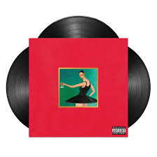
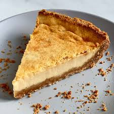
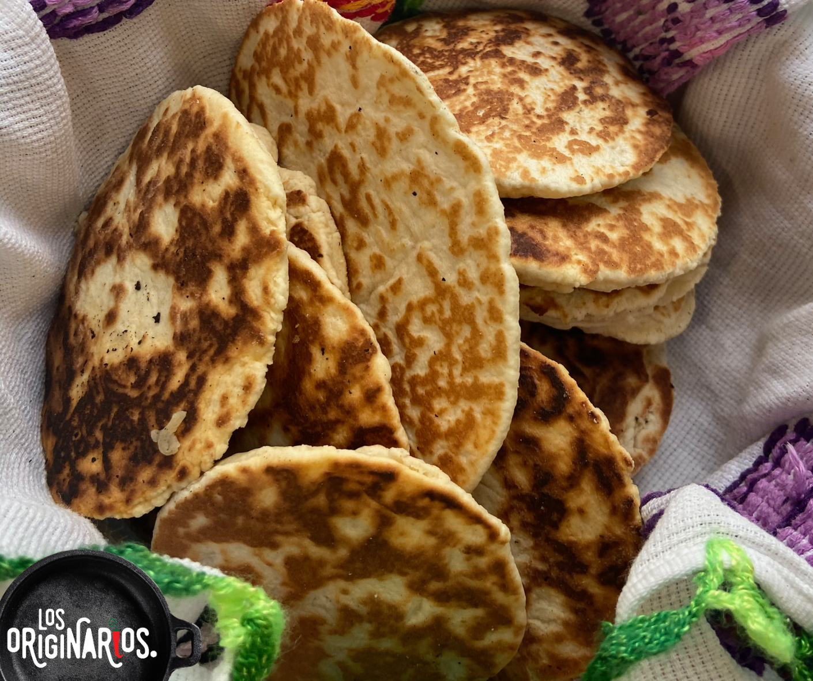
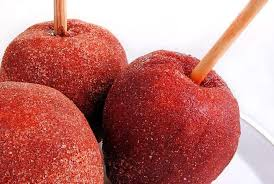
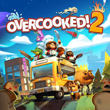

My Beautiful Dark Twisted Fantasy

Es un álbum que combina lujo y caos, explorando la fama, el ego y
los excesos con una producción musical intensa y muy artística.

Es un álbum que combina lujo y caos, explorando la fama, el ego y
los excesos con una producción musical intensa y muy artística.
Es un álbum caótico y experimental que mezcla lo espiritual con lo personal,
mostrando conflictos entre la fe, la fama y los excesos, con un sonido diverso y cambiante.

Es un álbum enérgico y accesible que combina hip-hop con sonidos electrónicos,
reflejando el éxito, la ambición y la celebración de haber alcanzado la cima.
Sigue la vida de jóvenes adinerados en Nueva York, donde el drama, las relaciones y
los secretos salen a la luz gracias a una misteriosa bloguera anónima.
Sigue la vida de una madre soltera y su hija en un pequeño pueblo, mostrando su relación cercana,
diálogos rápidos y las experiencias de amor, familia y crecimiento personal.
Sigue a una joven que se ve envuelta en un mundo de vampiros, romance y misterio, donde secretos sobrenaturales
y conflictos amorosos marcan su vida.

Primero se mezcla queso crema, leche condensada, huevos y vainilla hasta obtener una mezcla suave. Luego se vierte sobre una base de galleta triturada con mantequilla y se hornea a 180 °C durante aproximadamente 45 minutos. Se deja enfriar y se refrigera antes de servir.

Se mezcla harina, azúcar, mantequilla, huevo y un poco de leche hasta formar una masa suave. Se hacen pequeñas bolitas, se aplastan en forma de gordita y se espolvorean con azúcar. Se hornean a 180 °C durante aproximadamente 15 a 20 minutos hasta que estén ligeramente doradas.

Primero se lavan y secan bien las manzanas y se les coloca un palito. Después se toma la pasta para cubrir manzanas sabor tamarindo se amasa ligeramente hasta que esté suave. Luego se moldea alrededor de cada manzana hasta cubrirla por completo. Finalmente, se deja reposar y están listas para disfrutar.
Es un juego de acción estilo arcade con estética de caricaturas antiguas, donde enfrentas jefes desafiantes
mientras recorres un mundo lleno de humor, dificultad y animación clásica.
Es un juego de disparos en equipo donde héroes con habilidades únicas compiten en partidas dinámicas,
combinando estrategia, acción y cooperación.

Es un juego caótico y divertido donde trabajas en equipo para preparar y servir comida bajo presión,
superando niveles llenos de obstáculos y retos.